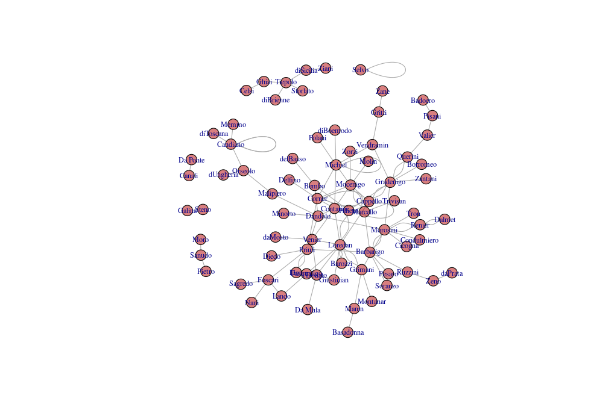
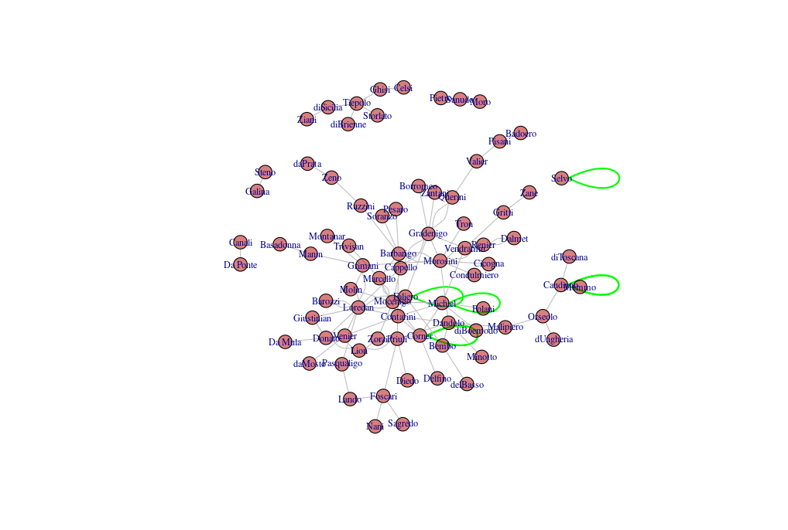
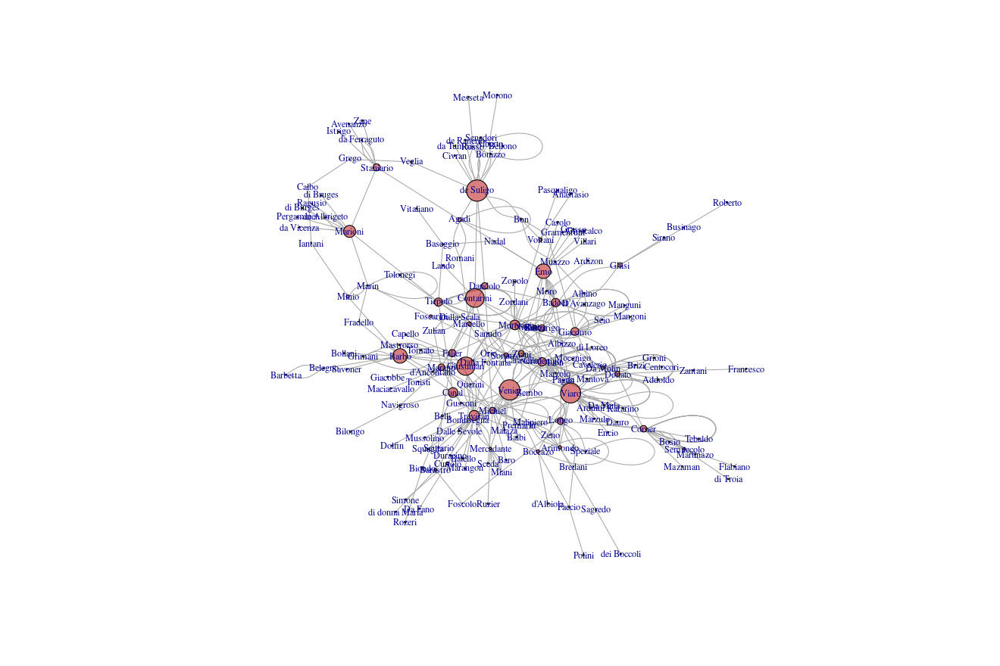

La historia de la república de Venecia a través de
sus redes sociales
Jornada de Redes
Esto
es Venecia
Una ciudad en una laguna, separada del
mar por una barra de tierra, el Lido, con entradas que se pueden
proteger fácilmente. El hecho de que no tuviera mucha
producción hizo que se desarrollara, desde el siglo X, como una potencia
comercial gracias a su flota de galeras, diseñada y producida en el
Arsenale, una empresa estatal. Eso la convirtió en una de las Repúblicas
Marineras italiana, y la más longeva.
Una república serenísima
Con dogos escogidos entre las
familias nobles
El concepto de casata o
familia es muy importante para entender la política e historia
veneciana. Las familias mantenían, en general, la cohesión a
través de mecanismos hereditarios y también de patrocinio; la
unidad de participación política era la familia, y las familias
de cierto status se reunían para elegir al presidente de la
república. Este es Michele Morosini, que pertenece a una de las
familias más duraderas. Veremos a estos Morosini una cierta
cantidad de veces. Este en concreto solo fue dogo
durante unos meses, pero tiene su tumba en San Zanipolo, donde
hay tumbas o monumentos funerarios de más de 20 dogos.
Una potencia marítima en el Mediterráneo
Usando las galeras, barcos muy
maniobrables y con una capacidad de carga considerable, iban
desde Venecia hasta Amberes en el Atlántico, y hasta
Constantinopla en el Mediterráneo. En esta pintura se
representa la batalla de Lepanto, que es muy posterior y que
de hecho marca el ocaso de Venecia, pero salen muchos barcos
con la bandera veneciana. Lo de las velas negras es más por
distinguir que por dar algún tipo de realismo.
Gobernante
electo, imperio de la ley, estabilidad, estado
dedicado al bien común
El mito de Venecia
¿Se ve este mito en sus redes
sociales?
install.packages("dogesr")
library(dogesr)
library(igraph)
data("doges.marriages")
plot(doges.marriages.sn,vertex.label.cex=0.7,vertex.size=8,vertex.color=rgb(0.7,0,0,0.5))


Merelo-Guervós, J. J. "What is a good doge?
Analyzing the patrician social network of the Republic of
Venice." arXiv preprint arXiv:2209.07334
(2022).
Es una red social de casi 800 años, que
abarca todos los dogos y sus esposas, las dogaresas. Hay una
cosa interesante que se puede ver aquí, y es que no se trata
de una red de ley de potencias.
¿Betweenness? Mejor con auto-bucleslibrary(dupNodes)
doges.marriages.sn.dup <- dup.nodes.from.graph(doges.marriages.sn)
V(doges.marriages.sn)$DNSLbetweenness <- betweenness.with.duplicated.nodes(doges.marriages.sn.dup)Merelo, J.J., Molinari, M.C. Intra-family links in the analysis of marital networks. J Comput Soc Sc (2024). https://doi.org/10.1007/s42001-023-00245-4
Who
let the doges out?
Un nuevo tipo de contrato: colleganza
Y una nueva burocracia profesional que
registraba todo
Puga, D., & Trefler, D. (2014). International Trade and Institutional Change: Medieval Venice’s Response to Globalization. The Quarterly Journal of Economics, 129(2), 753–821. https://doi.org/10.1093/qje/qju006
La colleganza era un contrato que
involucraba a dos familias (que tenían que responder por un
impago), una de las cuales financiaba el viaje, y otra
navegaba. Como eran contratos respaldados por el estado, que
también subastaba las flotas, quedaban registrados
(aunque no he registrado exactamente dónde, supongo que en
el Camarlenghi)
Y una nueva red: colleganza (hasta siglo
XIV)
devtools::install_github("JJ/serrata-families") # Code first!
library(serrata.families)
data("colleganza.graph")
library(dupNodes)
colleganza.dup <- dup.nodes.from.graph(colleganza.graph)
V(colleganza.graph)$DNSLbetweenness <- betweenness.with.duplicated.nodes(colleganza.dup)
groups <- components(colleganza.graph, mode="weak")
biggest_cluster_id <- which.max(groups$csize)
vert_ids <- V(colleganza.graph)[groups$membership == biggest_cluster_id]
connected.colleganza.graph <- induced_subgraph(colleganza.graph, vert_ids)
plot(connected.colleganza.graph,vertex.label.cex=0.7,vertex.size=V(connected.colleganza.graph)$DNSLbetweenness/300,vertex.color=rgb(0.7,0,0,0.5))Merelo-Guervós, Juan Julián, and Mario García-Valdez. "Agile (data) science: A (draft) manifesto." arXiv preprint arXiv:2104.12545 (2021).
En este caso, en vez de trabajar con
el paper primero y luego desarrollar según el paper lo
necesita, planteamos todas las hipótesis al principio y vamos
desarrollando el trabajo antes de empezar siquiera a escribir
al paper. De esta forma, como en el desarrollo ágil, se
pueden testear las hipótesis del paper directamente, y la
escritura del paper se convierte en el "despliegue" del
software; así también la publicación del módulo es inmediata
en cuanto que se publica el preprint, y aumenta la
reproducibilidad
Las familias son importantes

El palacio Contarini di Scrigni y Corfu,
uno de los 7 u 8 palacios que los Contarini tienen en Venecia
(incluyendo los Contarini del Bovolo, el de la escalera de caracol)
Entonces
llegó el cierre del Maggior Consiglio: La Serrata
La Sala del Maggior Consiglio, donde se
reunían hasta 2000 personas, en bancos, sentados de lado, sin
ninguna distinción entre ellos.